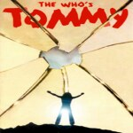

NON-COMMERCIAL AUDIOS
 |
Rachael Lily Rosenbloom (And Don't You Ever Forget It): Broadway: 01 December 1973 |
| Composer: Paul Jabara Lyricist: Paul Jabara, David Debin, Paul Issa | |
| Cast: Ellen Greene, Paul Jabara, Wayne Cilento, Anita Morris, Thommie Walsh, André DeShields | |
| Year: 1973 Language: EN Format: mp3 Bitrate: 160kb/s | |
| Release Title: Notes: |
 |
Radiant Baby: Off-Broadway |
| Composer: Debra Barsha Lyricist: Debra Barsha, Stuart Ross | |
| Cast: | |
| Year: 2003 Language: EN Format: mp3 Bitrate: 128kb/s | |
| Release Title: Notes: |
 |
Raggedy Ann: Broadway |
| Composer: Joe Raposo Lyricist: Joe Raposo | |
| Cast: Joe Barrett, Dick DeCareau,Richard Ryder, Bob Morrisey, Lisa Rieffel, Ivy Austin, Scott Schafer, Carolyn Marble Valentis, Michelan Sisti, Leo Burmester, Gail Benedict, Gordon Weiss, Joel Aroeste, Elizabeth Austin, Michaela Hughes, Melinda Buckley, Anny DeGange Holgate, Susann Fletcher, Steve Owsley, Gregory Butler, Andrea Wright | |
| Year: 1986 Language: EN Format: mp3 Bitrate: 160kb/s | |
| Release Title: Notes: |
 |
Rags: Broadway |
| Composer: Charles Strouse Lyricist: Stephen Schwartz | |
| Cast: Teresa Stratas, Larry Kert, Lonny Price, Judy Kuhn, Dick Latessa, Marcia Lewis, Terrence Mann | |
| Year: 1986 Language: EN Format: mp3 Bitrate: 192kb/s | |
| Release Title: Notes: |
 |
Rags: Jewish Repetory Theatre |
| Composer: Charles Strouse Lyricist: Stephen Schwartz | |
| Cast: Jonathan Kaplan, Ann Crumb, Crista Moore, Philip Hoffman, Rachel Black, Jan Neuberger, David Pevsner, Robert Tate, Alec Timmerman | |
| Year: 1991 Language: EN Format: mp3 Bitrate: 128kb/s | |
| Release Title: Notes: Untracked |
 |
Ragtime: Oslo |
| Composer: Stephen Flaherty Lyricist: Lynn Ahrens | |
| Cast: Emilie Berge Appelquist, Marvin Charles Cummings, Kristian Ludvig Gronvold, Katr, Brynjar Lilleheim, Erlend Lenan Lund, Mia Bjerke Mathisen, Christian Alfred Ranke, Lars Arne Rinde, Kasper Skjeggestad, Henrik Rinde Sunde, Kristin Rinde Sunde, Mimmi Tamba, Hogne Vangen | |
| Year: 2018 Language: NO Format: mp3 Bitrate: 184kb/s | |
| Release Title: Notes: |
 |
Ragtime: Boston Pops: 13 May 2023 |
| Composer: Stephen Flaherty Lyricist: Lynn Ahrens | |
| Cast: Phumzile Sojola, Elizabeth Stanley, John Cariani, Nikki Renée Daniels, David Harris, A.J. Shively, Klea Blackhurst, Julia Little, Quinn Murphy | |
| Year: 2023 Language: EN Format: mp3 Bitrate: 320kb/s | |
| Release Title: Notes: |
 |
Railroad Hour, The: Original Radio Cast |
| Composer: Various Lyricist: | |
| Cast: Gordon MacRae,Jane Powell, Dorothy Kirsten, Lucille Norman, Ginny Simms, Dorothy Warenskjold | |
| Year: 1948 Language: EN Format: mp3 Bitrate: 64kb/s | |
| Release Title: Notes: All 243 surviving episodes of the radio show that presented abridged versions of popular musicals and operettas including works created for the series. Episodes not tracked |
 |
Reach 4 It: Original Cast |
| Composer: Lyricist: | |
| Cast: | |
| Year: 2013 Language: EN Format: mp3 Bitrate: 320kb/s | |
| Release Title: Notes: Soundboard |
 |
Rebecca: Stuttgart: 15 April 2012 |
| Composer: Sylvester Levay Lyricist: Michael Kunze | |
| Cast: Lucy Scherer, Thomas Borchert, Pia Douwes, Kirsten Ibald, Hannes Staffler, Mona Graw, Jörg Neubauer, Daniele Nonnis | |
| Year: 2012 Language: DE Format: mp3 Bitrate: 224kb/s | |
| Release Title: Notes: |
 |
Rebecca: Budapest: 18 March 2013 |
| Composer: Sylvester Levay Lyricist: Michael Kunze | |
| Cast: Vágó Bernadett, Szabó P. Szilveszter, Janza Kata, Füredi Nikolett, Bálint Ádám, Pálfalvy Attila, Peller Anna, Sánta László | |
| Year: 2013 Language: DE Format: mp3 Bitrate: 224kb/s | |
| Release Title: Notes: |
 |
Rebecca: Tecklenburg: 25 August 2017 |
| Composer: Sylvester Levay Lyricist: Michael Kunze | |
| Cast: Jan Ammann, Pia Douwes, Milica Jovanovic, Robert Meyer, Anne Welte, Thomas Hohler, Roberta Valentini | |
| Year: 2017 Language: DE Format: mp3 Bitrate: 128kb/s | |
| Release Title: Notes: |
 |
Rebecca: Vienna: 16 November 2022 |
| Composer: Sylvester Levay Lyricist: Michael Kunze | |
| Cast: Nienke Latten, Mark Seibert, Marle Martens, Boris Pfeifer, Ana Milva Gomes, Annemieke van Dam, James Park, Aris Sas | |
| Year: 2022 Language: Format: mp3 Bitrate: 192kb/s | |
| Release Title: Notes: Marle Martens debut as Mrs. Danvers |
 |
Rebecca: Vienna: 11 February 2023 |
| Composer: Sylvester Levay Lyricist: Michael Kunze | |
| Cast: Nienke Latten, Philipp Dietric | |
| Year: 2023 Language: DE Format: mp3 Bitrate: 128kb/s | |
| Release Title: Notes: |
 |
Rebecca: Vienna: 03 October 2023 |
| Composer: Sylvester Levay Lyricist: Michael Kunze | |
| Cast: Ninenke Latten, Mark Seibert, Annemieke van Dam, Boris Pfeifer, Ana Milva Gomes, James Park, Rebecca Soumangé, Tommie Luyben, Florian Fetterle, Ulrich allroggen, Bianca Basler, Maximilian Klakow, Jev Davis | |
| Year: 2023 Language: DE Format: mp3 Bitrate: 192kb/s | |
| Release Title: Notes: Mark Seibert’s first show after his return from honeymoon |
 |
Rebecca: Vienna: 24 June 2023 |
| Composer: Sylvester Levay Lyricist: Michael Kunze | |
| Cast: Nienke Latten, Mark Seibert, Willemijn Verkaik, Boris Pfeifer, Ana Milva Gomes, James Park, Annemieke van Dam, Aris Sas | |
| Year: 2023 Language: DE Format: mp3 Bitrate: 103kb/s | |
| Release Title: Notes: Willemijn Verkaik's last show |
 |
Rebecca: London: 06 September 2023 |
| Composer: Sylvester Levay Lyricist: Michael Kunze | |
| Cast: Richard Carson, Lauren Jones, Kara Lane, Alex James-Ward, Sarah Harlington, Piers Bate, David Breeds, Neil Moors, Shirley Jameson | |
| Year: 2023 Language: EN Format: mp3 Bitrate: 192kb/s | |
| Release Title: Notes: |
 |
Rebecca: Korean Sitzprobe: 18 August 2023 |
| Composer: Sylvester Levay Lyricist: Michael Kunze | |
| Cast: Kim Bo-kyung, Jisu Lee, Ock Joo-hyun, Go Cheol-soon, Youngsook Shin, Hong Ki-ju, Je Byeong-jin, Lee Ji-su , Lisa, Enoch, Sabong Yoon, Lee Ji-hye, Oh Yun-seo, Shin Young-sook, Kim Bo-kyung, Yoon Seok-won, Wendy, Lee Eun-yul Lim Jeong-mo, Tay | |
| Year: 2023 Language: KO Format: mp3 Bitrate: 192kb/s | |
| Release Title: 레베카 Notes: |
 |
Red Shoes, The: Broadway |
| Composer: Jule Styne Lyricist: Marsha Noman, Paul Stryker | |
| Cast: Leslie Browne, Margaret Illmann, Tad Ingram, Hugh Panaro, George de la Peña, Roger Rees, Amy Wilder | |
| Year: 1993 Language: EN Format: mp3 Bitrate: 160kb/s | |
| Release Title: Notes: |
 |
Regina: B.B.C. Radio: 18 May 1991 |
| Composer: Marc Blitzstein Lyricist: Marc Blitzstein | |
| Cast: Katherine Terrell, Susan Roberts, Nan Christie, Theresa Merritt, William McCue, Victor Ledbetter, Richard Suart, Philip Gould, Neil Patterson, David Morrison, Tim Johnson, Scott Cooper | |
| Year: 1991 Language: EN Format: mp3 Bitrate: 128kb/s | |
| Release Title: Notes: Untracked |
 |
Regreso en Patagonia: Buenos Aires |
| Composer: Nazareno Andorno Lyricist: Gaston Cerana, Alejandro G. Roemmers | |
| Cast: Fernando Dente, Nahuel Pennisi, Franco Masini, Iñaki Aldao, Laura Esquivel, Karina Hernández, Candela Molfese, Roberto Peloni, Franco Rau | |
| Year: 2022 Language: ES Format: mp3 Bitrate: 256kb/s | |
| Release Title: Notes: Untracked |
 |
Remarkables, The: Edinburgh Fringe |
| Composer: Sean Wareing, Matt Smith Lyricist: Sean Wareing, Matt Smith | |
| Cast: | |
| Year: 2019 Language: EN Format: mp3 Bitrate: 320kb/s | |
| Release Title: Notes: |
 |
Rembrandt de musical: Amsterdam |
| Composer: Dirk Brossé, Jeroen Engelbert Lyricist: Anna de Graef | |
| Cast: Henk Poort, Maike Boerdam, Wieneke Remmers, Paul Vaes | |
| Year: 2006 Language: NL Format: m4a Bitrate: 128kb/s | |
| Release Title: Notes: |
 |
Rembrandt de musical: Amsterdam |
| Composer: Dirk Brossé, Jeroen Engelbert Lyricist: Anna de Graef | |
| Cast: Henk Poort, Maike Boerdam, Wieneke Remmers, Paul Vaes | |
| Year: 2006 Language: NL Format: mp3 Bitrate: 256kb/s | |
| Release Title: Notes: |
 |
Rent: Mexico City |
| Composer: Jonathan Larson Lyricist: Jonathan Larson | |
| Cast: Erik Rubin, Fazio Galvan Laura Cortes, Bianca Marroquin, Pia Aun, Enrique Chi, Jano, Jaime Rojas, Frida, Marco Antonio, Damaris Martínez | |
| Year: 1998 Language: ES Format: mp3 Bitrate: 160kb/s | |
| Release Title: Notes: |
 |
Rent: Tokyo |
| Composer: Jonathan Larson Lyricist: Jonathan Larson | |
| Cast: Takashi Utsunomiya, Tsukasa Hamaguchi, Kouji Yamamoto, Shinichi Ishihara, KONTA, KOHJIRO | |
| Year: 1998 Language: JA Format: m4a Bitrate: 365kb/s | |
| Release Title: レント Notes: |
 |
Rent: Barcelona |
| Composer: Jonathan Larson Lyricist: Jonathan Larson | |
| Cast: Daniel Anglès, Ignasi Vidal, Sandra de Victoria, Jorge Fernández-Hidalgo, Manuela Nieto, Miquel Fernández, Damaris Martínez, Jano | |
| Year: 1999 Language: ES Format: mp3 Bitrate: 192kb/s | |
| Release Title: Notes: |
 |
Rent: London: 30 October 1999 |
| Composer: Jonathan Larson Lyricist: Jonathan Larson | |
| Cast: Peter Eldridge, Loraine Velez, Joseph McFadden, Desune Coleman, Jocelyn Hughes, Jacqui Dubois | |
| Year: 1999 Language: EN Format: m4a Bitrate: 128kb/s | |
| Release Title: Notes: |
 |
Rent: São Paulo |
| Composer: Jonathan Larson Lyricist: Jonathan Larson | |
| Cast: Robson Moura, Jarbas Homem de Mello, Mauríco Xavier, Ronnie Marruda, Neusa Romano, André Dias, Andréa Marquee | |
| Year: 2000 Language: PT Format: mp3 Bitrate: 128kb/s | |
| Release Title: Notes: |
 |
Rent: U.K. Tour: 09 February 2001 |
| Composer: Jonathan Larson Lyricist: Jonathan Larson | |
| Cast: Adam Rickitt, Wendy Mae Brown, Damien Flood, Debbie Kurup, Jason Pennycooke, Mykal Rand, Lucy Williamson | |
| Year: 2001 Language: EN Format: m4a Bitrate: 128kb/s | |
| Release Title: Notes: |
 |
Rent: Buenos Aires |
| Composer: Jonathan Larson Lyricist: Jonathan Larson | |
| Cast: Germán Tripel, Andrés Bagg, Pablo Sultani, Martín Repetto, Déborah Turza, Ángel Hernández, Florencia Otero, Laura Conforte | |
| Year: 2008 Language: ES Format: m4a Bitrate: 128kb/s | |
| Release Title: Notes: |
 |
Rent: Mexico City |
| Composer: Jonathan Larson Lyricist: Jonathan Larson | |
| Cast: Kike Jiménez, Daiana Liparoti, Gimena Gómez, Rodolfo Zarco, Paloma Cordero, Iker Madrid, Luis Carlos Villarreal, José Sampedro, Diego Medel, Jerry Velázquez, Karen Espinosa, Mauricio Romero, María Chacón, Anaís Loz, Ma. Elisa Gallegos, Sebastián Treviño | |
| Year: 2016 Language: ES Format: m4a Bitrate: 123kb/s | |
| Release Title: Notes: Untracked |
 |
Rent: Buenos Aires |
| Composer: Jonathan Larsen Lyricist: Jonathan Larsen | |
| Cast: Franco Friguglietti, Cande Molfese, Federico Coates, Mariel Percossi, Lula Rosenthal, Pato Witis, Manu Victoria, Patricio Arellano,Juli·n Pucheta, Michelle Hersch, Pedro Vega, Pablo Turturiello, Michelle Csapek, Luli Ambrosini, Emely Myles, Maca Giraldez | |
| Year: 2021 Language: ES Format: mp3 Bitrate: 128kb/s | |
| Release Title: Notes: Songs only |
 |
Rent: Buenos Aires |
| Composer: Jonathan Larsen Lyricist: Jonathan Larsen | |
| Cast: Franco Friguglietti, Cande Molfese, Federico Coates, Mariel Percossi, Lula Rosenthal, Pato Witis, Manu Victoria, Patricio Arellano,Juli·n Pucheta, Michelle Hersch, Pedro Vega, Pablo Turturiello, Michelle Csapek, Luli Ambrosini, Emely Myles, Maca Giraldez | |
| Year: 2021 Language: ES Format: mp3 Bitrate: 128kb/s | |
| Release Title: Notes: Untracked |
 |
Rent: Buenos Aires: 20 February 2025 |
| Composer: Jonathan Larson Lyricist: Jonathan Larson | |
| Cast: Ángela Torres, Pablo Turturiello, Tomás Wicz, Sacha Bercovich, Ana Devin, Juan Manuel Outeiro, Eugenia Gil Rodriguez | |
| Year: 2025 Language: ES Format: mp3 Bitrate: 128kb/s | |
| Release Title: Notes: |
 |
Reuben, Reuben: Boston, MA: 05 October 1955 |
| Composer: Marc Blitztein Lyricist: Marc Blitztein | |
| Cast: Eddie Albert, Evelyn Lear, Kaye Ballard, Enzo Stuarti, George Gaynes Sondra Lee, Timmy Everett | |
| Year: 1955 Language: EN Format: mp3 Bitrate: 160kb/s | |
| Release Title: Notes: |
 |
Révue des Ambassadeurs, La: Radio Concert: 31 December 2013 |
| Composer: Cole Porter Lyricist: Cole Porter | |
| Cast: | |
| Year: 2013 Language: EN Format: m4a Bitrate: 256kb/s | |
| Release Title: Notes: |
 |
Ride the Winds: Johnstown, PA |
| Composer: John Driver Lyricist: John Driver | |
| Cast: Jean Arcurio, Brian Empfield, Dante Horvath, Lou Horvath, Raquel Luciano, Chandler Mical, Pavlos Plakakis, Brandon Prazinko, Kim Rauch, Annie Rifilato, Debbie Sanchez-Meketa | |
| Year: 2011 Language: EN Format: mp3 Bitrate: 128kb/s | |
| Release Title: Notes: |
 |
Ride the Winds: Broadway: 02 October 2011 |
| Composer: John Driver Lyricist: John Driver | |
| Cast: Jean Arcurio, Brian Empfield, Dante Horvath, Lou Horvath, Raquel Luciano, Chandler Mical, Pavlos Plakakis, Brandon Prazinko, Kim Rauch, Annie Rifilato, Debbie Sanchez-Meketa | |
| Year: 2011 Language: EN Format: MP3 Bitrate: 128kb/s | |
| Release Title: Notes: |
 |
Rink, The: Broadway |
| Composer: John Kander Lyricist: Fred Ebb | |
| Cast: Chita Rivera, Liza Minelli | |
| Year: 1984 Language: EN Format: mp3 Bitrate: 160kb/s | |
| Release Title: Notes: |
 |
Road Show: City Center Encores!: 24 July 2019 |
| Composer: Stephen Sondheim Lyricist: Stephen Sondheim | |
| Cast: Raúl Esparza, Brandon Uranowitz, Jin Ha, Maty Beth Piel, Chuck Cooper, Brandon Contreras, Rheaume Crenshaw, Daniel Edwards, Marina Kondo, Jay Lusteck, Liz McCartney, Matt Moisey, Shereen Pimentel, Sharone Sayegh and Vishal Vaidya | |
| Year: 2019 Language: EN Format: mp3 Bitrate: 320kb/s | |
| Release Title: Notes: |
 |
Robert And Elizabeth: Melbourne |
| Composer: Ron Grainer Lyricist: Ronald Millar | |
| Cast: June Bronhill, Denis Quilley, Frank Thring, Valmai Johnston, Judy Banks, Ray Collier, Elliott Cairnes, Madeleine Orr | |
| Year: 1966 Language: EN Format: mp3 Bitrate: 256kb/s | |
| Release Title: Notes: |
 |
Roberta: New Amsterdam Concert: 15 April 1984 |
| Composer: Jerome Kern Lyricist: Otto Harbach | |
| Cast: Russ Thacker, David Carroll, Mia Dillon, Judith Blazer, Loni Ackerman, Laurence, Jeff Keller, Michael Edwin Willson, Merwin Foard, Parks Hill ,David Miles, Arlene Francis | |
| Year: 1984 Language: EN Format: mp3 Bitrate: 192kb/s | |
| Release Title: Notes: |
 |
Rockabye Hamlet: Canadian Tour |
| Composer: Cliff Jones Lyricist: Cliff Jones | |
| Cast: Brent Carver, Beverley D'Angelo | |
| Year: 1974 Language: EN Format: m4a Bitrate: 128kb/s | |
| Release Title: Notes: |
 |
Rockabye Hamlet: Broadway: Preview: 1976 |
| Composer: Cliff Jones Lyricist: Cliff Jones | |
| Cast: Rockabye Hamlet | |
| Year: 1976 Language: EN Format: mp3 Bitrate: 128kb/s | |
| Release Title: Notes: |
 |
Rockabye Hamlet: Broadway |
| Composer: Cliff Jones Lyricist: Cliff Jones | |
| Cast: | |
| Year: 1976 Language: EN Format: mp3 Bitrate: 192kb/s | |
| Release Title: Notes: |
 |
Rockabye Hamlet: Bizarre Noir Theatre: 19 July 2014 |
| Composer: Cliff Jones Lyricist: Cliff Jones | |
| Cast: Jane Aquilina, John Cencio Burgos, Sean Driscoll, Justin Habben, Sarah Hill, Nancy Ellen Reinstein, Jillian Schiralli, Siobhan Stevenson, Camellia Tatara, Ian Wehrle, Joey Sanchez | |
| Year: 2014 Language: EN Format: mp3 Bitrate: 160kb/s | |
| Release Title: Notes: |
 |
Rockabye Hamlet: Ophelia Theatre Company: 17 May 2014 |
| Composer: Cliff Jones Lyricist: Cliff Jones | |
| Cast: Kevin Reed, Samantha Turlington, Kevin Berger, Blair Trunzo, Abigail Ludrof, Buddy Pease, Landon Sutton, Tessa Fairey, Dace McNally, Kevin Ruiter, Erica Diederich, Michael Grispin, Ryan Kimble, Taryn Kellogg, Alison Klemp, Meredith Myers | |
| Year: 2014 Language: EN Format: mp3 Bitrate: 160kb/s | |
| Release Title: Notes: |
 |
Rocky Over The Rainbow: Dutch Tour |
| Composer: Harold Arlen, Richard O'Brien Lyricist: Eelco Claassen, Michael Diederich, Jim de Groot, Richard O'Brien | |
| Cast: Tony Neef, Linda Wagenmakers | |
| Year: 2001 Language: EN, NL Format: m4a Bitrate: 128kb/s | |
| Release Title: Notes: |
 |
Roméo Et Juliette - De La Haine à l'Amour: Mexico City |
| Composer: Gérard Presgurvic Lyricist: Gérard Presgurvic | |
| Cast: Carlos Algara, Melissa Barrera, Hector Chapa, Liliana Escobar, Julio Granados, Pedroluiz Ibarra, Ricardo Leal, Raymundo Lobo, Daniela Rico, Angelo Salais, Hugo Serna, Anabel Valdes, Luis Carlos Villarreal | |
| Year: 2008 Language: ES Format: mp3 Bitrate: 96kb/s | |
| Release Title: Roméo y Julieta Notes: |
 |
Roméo Et Juliette - De La Haine à l'Amour: Madrid |
| Composer: Gérard Presgurvic Lyricist: Gérard Presgurvic | |
| Cast: Feli Barrueco, José Javier Blecua, César Casado, Daniel Casado, Daniel Díaz, Eduardo Fernández, Diana Guerrero, Olga Pérez, Daniel Sacristán, Sergio Solis | |
| Year: 2008 Language: ES Format: mp3 Bitrate: 320kb/s | |
| Release Title: Romeo y Julieta: de la odia al amor Notes: |
 |
Roza: Broadway |
| Composer: Gilbert Bécaud Lyricist: Julian Moore | |
| Cast: Georgia Brown, Bob Gunton, Yamil Borges, Neal Ben-Ari | |
| Year: 1987 Language: EN Format: mp3 Bitrate: 320kb/s | |
| Release Title: Notes: |
 |
Rudolf The Last Kiss: Budapest |
| Composer: Frank Wildhorn Lyricist: Nan Knighton, Jack Murphy | |
| Cast: Mészáros Árpád Zsolt, Szabó P. Szilveszter, Janza Kata, Vágó Zsuzsi, Polyák Lilla | |
| Year: 2007 Language: HU Format: mp3 Bitrate: 192kb/s | |
| Release Title: Notes: |
 |
Salad Days: Television Soundtrack |
| Composer: Julian Slade Lyricist: Dorothy Reynolds, Julian Slade | |
| Cast: Ian Richardson, Susan Beagley, Simon Green, Amanda Bairstow, Osmund Bullock, Ann Beach, Gwen Cherrell, Margo Cunningham | |
| Year: 1982 Language: Format: mp3 Bitrate: 128kb/s | |
| Release Title: Notes: ripped from the TV Broadcast |
 |
Sam And Joe: Rose Bruford College |
| Composer: Christian Powlesland Lyricist: Christian Powlesland | |
| Cast: Ryan Anderson, Gavin Brooks, Morgan Burgess, Damien Edwards, Heather Gourdie, Leah Jamieson, Caitlin Lavagna, Sam Lightfoot-Loftus, Alice Mayer, Jacob Powell, Christian Powlesland, Rosie Smith, Lauren Thomas | |
| Year: 2019 Language: EN Format: mp3 Bitrate: 320kb/s | |
| Release Title: Notes: Soundboard of the complete show |
 |
Saravá: Broadway |
| Composer: Mitch Leigh Lyricist: N. Richard Nash | |
| Cast: Tovah Feldshuh, P.J. Benjamin, Michael Ingram, Betty Walker, Carol Jean Lewis, Roderick Spencer Sibert, Rany Graff, Alan Abrams | |
| Year: 1979 Language: EN Format: mp3 Bitrate: 160kb/s | |
| Release Title: Notes: |
 |
Saturday Night Fever: Buenos Aires |
| Composer: Various Lyricist: Various | |
| Cast: Dario Petruzio, Silvia Luchetti, Elena Roger, Charly G, Héctor Pilatti, Diego Bross | |
| Year: 2001 Language: ES Format: mp3 Bitrate: 128kb/s | |
| Release Title: Fiebre de sabado por la noche Notes: |
 |
Saturday Night Fever: Buenos Aires |
| Composer: Various Lyricist: Various | |
| Cast: Dario Petruzio, Silvia Luchetti, Elena Roger, Charly G, Héctor Pilatti, Diego Bross | |
| Year: 2001 Language: ES Format: mp3 Bitrate: 192kb/s | |
| Release Title: Fiebre de sabado por la noche Notes: Songs only |
 |
Saturday Night Fever: Mexico City |
| Composer: Various Lyricist: Various | |
| Cast: Mauricio Martinez, Lissett | |
| Year: 2003 Language: ES Format: m4a Bitrate: 128kb/s | |
| Release Title: Fiebre de sabado por la noche Notes: Songs only |
 |
Say Hello to Harvey: Toronto: 06 Spetember 1981 |
| Composer: Leslie Bricusse Lyricist: Leslie Bricusse | |
| Cast: Donald O'Connor, Patricia Routledge, Patricia Arnell, Joe Silver, Judy Sabo John Gardiner, Angela Fusco, Maxine Miller, Sidney Miller | |
| Year: 1981 Language: EN Format: mp3 Bitrate: 128kb/s | |
| Release Title: Notes: World Premiere |
 |
Scarlet Pimpernel, The: Mexico City |
| Composer: Frank Wildhorn Lyricist: Nan Knighton | |
| Cast: Enrique del Olmo, Yolanda Orrantia, Abel Fernando, Diego Sanchezserr, Fernanda Ostos, | |
| Year: 2014 Language: ES Format: mp3 Bitrate: 192kb/s | |
| Release Title: Notes: Songs only |
 |
Scotland, PA: Roundabout Theatre Company |
| Composer: Adam Gwon Lyricist: Adam Gwon | |
| Cast: Jeb Brown, Jay Armstrong Johnson, Taylor Iman Jones, Lacretta, Megan Lawrence, Ryan McCartan, Will Meyers, Wonu Ogunfowora, David Rossmer, Alysha Umphress Kaleb Wells, Heather Ayers, Jimmy Brewer, Evan Daves, Deven May, Alanna Saunders | |
| Year: 2019 Language: EN Format: mp3 Bitrate: 96kb/s | |
| Release Title: Notes: Soundboard of the songs |
 |
Scrooge: B.B.C. Radio |
| Composer: Leslie Bricusse Lyricist: Leslie Bricusse | |
| Cast: Anthony Newley, Stratford Johns, Barry Howard, David Howe, Paul Robinson, Felicity Soper | |
| Year: 1994 Language: EN Format: mp3 Bitrate: 128kb/s | |
| Release Title: Notes: Untracked |
 |
Secret Garden, The: Broadway: 25 April 1991 |
| Composer: Lucy Simon Lyricist: Marsha Norman | |
| Cast: Robert Westenberg, Mandy Patinkin,Daisy Eagan, Rebecca Luker, John Cameron Mitchell, Patricia Phillips, Michael De Vries, Peter Marinos, Rebecca Judd, Alison Fraser | |
| Year: 1991 Language: EN Format: m4a Bitrate: 128kb/s | |
| Release Title: Notes: Opening night. Soundboard |
 |
Secret Garden, The: London: 15 March 2001 |
| Composer: Lucy Simon Lyricist: Marsha Norman | |
| Cast: Philip Quast, Carmen Cusack, Peter Polycarpou, Linzi Hately | |
| Year: 2001 Language: EN Format: mp3 Bitrate: 128kb/s | |
| Release Title: Notes: |
 |
Secret Garden, The: World AIDS Day Benefit Concert: 01 December 2005 |
| Composer: Lucy Simon Lyricist: Marsha Norman | |
| Cast: Michael Arden, Laura Benanti, Will Chase, Max von Essen, Celia Keenan-Bolger, Jackie Nederthal, Steven Pasquale | |
| Year: 2005 Language: EN Format: m4a Bitrate: 128kb/s | |
| Release Title: Notes: |
 |
Secret Garden, The: Hannover: August 2009 |
| Composer: Lucy Simon Lyricist: Marsha Norman | |
| Cast: Fredrik Wickerts, Jens Krause, Sarah Wilken, Michaela Linck, Jens Plewinski | |
| Year: 2009 Language: DE Format: mp3 Bitrate: 192kb/s | |
| Release Title: Der geheime Garten Notes: |
 |
Senator Joe: Broadway: 06 January 1989 [1st Preview] |
| Composer: Tom O'Horgan Lyricist: Perry Arthur Kroeger | |
| Cast: J.P. Dougherty, Cheryl Alexander, Richard Coombs, Tom Desrocher, Elena Ferrante, Kristen Gray, Jeff Johnson, Michael Leslie, Mary Jo Limpert, Aaron Mendelson, Michael Rapposelli, Maggi-Meg Reed, Mary Roth | |
| Year: 1989 Language: EN Format: mp3 Bitrate: 128kb/s | |
| Release Title: Notes: |
 |
She Loves Me: Television Cast |
| Composer: Jerry Bock Lyricist: Sheldon Harnick | |
| Cast: Robin Phillips, Gemma Craven, David Kernan, Diane Langton, Derek Smith, Nigel Rathbone, Aubrey Woods | |
| Year: 1978 Language: EN Format: mp3 Bitrate: 128kb/s | |
| Release Title: Notes: Audio ripped from the video |
 |
She Loves Me: Menier Chocolate Factory |
| Composer: Jerry Bock Lyricist: Sheldon Harnick | |
| Cast: Callum Howells, Alistair Brookshaw, Katherine Kingsley, Dominic Tighe, Mark Umbers, Les Dennis, Scarlett Strallen, Peter Dukes, Norman Pace, Rachel Bingham, Matt Crandon, Luke Fetherston, Olivia Fines, Aimee Hodnett, Sarah-Marie Maxwell, Vincent Pirillo | |
| Year: 2017 Language: EN Format: mp3 Bitrate: 320kb/s | |
| Release Title: Notes: Soundboard |
 |
She's A Good Fellow: Library Of Congress Concert |
| Composer: Jerome Kern Lyricist: Anne Caldwell | |
| Cast: Judy Kaye, Jeanne Lehman, Sheryl Woods, George Dvorsky, Cris Groenendaal, Michael Maguire | |
| Year: 1986 Language: EN Format: mp3 Bitrate: 320kb/s | |
| Release Title: Notes: |
 |
Sheba: Chicago |
| Composer: Clint Ballard Jr. Lyricist: Lee Goldsmith | |
| Cast: Judy Kaye, Kimberley Farr, Gary Sandy, George D. Wallace, Ward Frederick, Pat Lavery, Charles Gerber, Tony Lincoln | |
| Year: 1974 Language: EN Format: mp3 Bitrate: 128kb/s | |
| Release Title: Notes: |
 |
Sherry!: Broadway |
| Composer: Laurence Rosenthal Lyricist: James Lipton | |
| Cast: Clive Revill, Dolores Gray, Elizabeth Allen | |
| Year: 1967 Language: EN Format: m4a Bitrate: 128kb/s | |
| Release Title: Notes: |
 |
Sherry!: Boston, MA |
| Composer: Laurence Rosenthal Lyricist: James Lipton | |
| Cast: George Sanders, Dolores Gray, Elizabeth Allen | |
| Year: 1967 Language: EN Format: m4a Bitrate: 128kb/s | |
| Release Title: Notes: |
 |
Shōgun: Broadway |
| Composer: Paul Chihara Lyricist: John Driver | |
| Cast: Philip Casnoff, Ron Navarre, Lee Lobenhofer, Terry Lehmkuhl, John Herrera | |
| Year: 1990 Language: EN Format: mp3 Bitrate: 192kb/s | |
| Release Title: Notes: |
 |
Shrek: Lillestrøm |
| Composer: Jeanine Tesori Lyricist: David Lindsay-Abaire | |
| Cast: Christian Alfred Ranke, Hanne Selmer-Olsen, Stine Tamlag, Hogne Vangen | |
| Year: 2018 Language: NO Format: mp3 Bitrate: 320kb/s | |
| Release Title: Notes: |
 |
Side by Side by Sondheim: Denmark |
| Composer: Stephen Sondheim, Jule Styne, Leonard Bernstein, Mary Rodgers Lyricist: Stephen Sondheim | |
| Cast: Hans-Otto Bisgaard, Flemming Enevold, Ulla Henningsen, Birgitte Raaberg | |
| Year: 1989 Language: DA Format: mp3 Bitrate: 224kb/s | |
| Release Title: Notes: |
 |
Side Show: Broadway: 04 January 1998 |
| Composer: Henry Krieger Lyricist: Bill Russell | |
| Cast: Emily Skinner, Alice Ripley, Hugh Panaro, Jeff McCarthy, Norm Lewis, Ken Jennings | |
| Year: 1998 Language: EN Format: mp3 Bitrate: 128kb/s | |
| Release Title: Notes: Closing night soundboard |
 |
Sister Act: Atlanta, GA |
| Composer: Alan Menken Lyricist: Glen Slater | |
| Cast: Dawnn Lewis, Elizabeth Ward Land, Harrison White | |
| Year: 2007 Language: EN Format: mp3 Bitrate: 128kb/s | |
| Release Title: Notes: |
 |
Slut!: Off-Broadway: 01 November 2005 |
| Composer: Stephen Sislen Lyricist: Ben H. Winters | |
| Cast: Jenn Colella, Mary Faber, Harriett D. Foy, Andy Karl, David Josefsberg, Kevin Pariseau, Jim Stanek, Amanda Watkins | |
| Year: 2005 Language: EN Format: mp3 Bitrate: 128kb/s | |
| Release Title: Notes: |
 |
Smile: Broadway: 22 November 1986 |
| Composer: Marvin Hamlisch Lyricist: Howard Ashman | |
| Cast: | |
| Year: 1986 Language: EN Format: mp3 Bitrate: 128kb/s | |
| Release Title: Notes: Final Preview |
 |
Smile: Broadway |
| Composer: Marvin Hamlisch Lyricist: Howard Ashman | |
| Cast: Smile | |
| Year: 1986 Language: EN Format: mp3 Bitrate: 128kb/s | |
| Release Title: Notes: |
 |
Smile: Broadway |
| Composer: Marvin Hamlisch Lyricist: Howard Ashman | |
| Cast: | |
| Year: 1986 Language: EN Format: mp3 Bitrate: 128kb/s | |
| Release Title: Notes: Preview |
 |
Smile: Broadway: 03 January 1987 |
| Composer: Marvin Hamlisch Lyricist: Howard Ashman | |
| Cast: Smile | |
| Year: 1987 Language: EN Format: mp3 Bitrate: 128kb/s | |
| Release Title: Notes: Closing Night |
 |
Smith: Broadway |
| Composer: Matt Dubey, Dean Fuller Lyricist: Matt Dubey, Dean Fuller | |
| Cast: Virginia Sandifur, Don Murray, Mort Marshall, Carol Morley, Lou Criscuolo, William James, David Vosburgh, Don Prieur, Ted Thurston, David Horwitz | |
| Year: 1973 Language: EN Format: m4a Bitrate: 200kb/s | |
| Release Title: Notes: |
 |
Snoopy: Hamburg |
| Composer: Larry Grossman Lyricist: Hal Hackady | |
| Cast: | |
| Year: 1987 Language: DE Format: mp3 Bitrate: 128kb/s | |
| Release Title: Notes: Songs only |
 |
Snoopy: Television Soundtrack |
| Composer: Larry Grossman Lyricist: Hal Hackady | |
| Cast: Kristie Baker, Tiffany Billings, Cameron Clarke, Ami Foster, Sean Holling, Bill Melendez, Jeremy Miller | |
| Year: 1988 Language: EN Format: mp3 Bitrate: 128kb/s | |
| Release Title: Notes: Ripped from the TV broadcast |
 |
Something's Afoot: Broadway |
| Composer: Robert Gerlach, Ed Linderman, James McDonald, David Vos Lyricist: Robert Gerlach, James McDonald, David Vos | |
| Cast: Gary Beach, Willard Beckham, Gary Gage, Barbara Heuman, Marc Jordan (10), Tessie O'Shea, Jack Schmidt, Liz Sheridan, Neva Small, Sel Vitella | |
| Year: 1976 Language: EN Format: mp3 Bitrate: 320kb/s | |
| Release Title: Notes: |
 |
Something's Afoot: Television Soundtrack |
| Composer: Robert Gerlach, Ed Linderman, James McDonald, David Vos Lyricist: Robert Gerlach, James McDonald, David Vos | |
| Cast: Tony Van Bridge, Andy Gibb, Pam Hyatt, Don McManus, Charlotte Moore, Blaine Parker, Brian Petchey, Wayne Robson, Jean Stapleton, Lenore Zann | |
| Year: 1984 Language: EN Format: mp3 Bitrate: 256kb/s | |
| Release Title: Notes: |
 |
Sondheim Unplugged: 54 Below: 24 February 2019 |
| Composer: Stephen Sondheim Lyricist: Stephen Sondheim | |
| Cast: Sarah Rice, Natalie Arneson, Joshua Lance Dixon, Marquee Five, Kate Loprest, Eric Loscheider, Jonathan Raviv, Jonathan Rayson, Lisa Sabin, Lucia Spina | |
| Year: 2019 Language: EN Format: mp3 Bitrate: 128kb/s | |
| Release Title: Notes: |
 |
Song & Dance: Broadway |
| Composer: Andrew Lloyd Webber Lyricist: Don Black | |
| Cast: Betty Buckley | |
| Year: 1986 Language: EN Format: mp3 Bitrate: 128kb/s | |
| Release Title: Notes: Only contains Act 1: Tell Me On A Sunday |
 |
Song & Dance: National Tour Cast |
| Composer: Andrew Lloyd Webber Lyricist: Don Black | |
| Cast: Melissa Manchester | |
| Year: 1987 Language: EN Format: mp3 Bitrate: 256kb/s | |
| Release Title: Notes: Only contains Act 1: Tell Me On A Sunday |
 |
Soon: Broadway: January 1971 |
| Composer: Joseph M. Kookoolis, Scott Fagan Lyricist: Scott Fagan | |
| Cast: Peter Allen, Dennis Belline, Barry Bostwick, Pendleton Brown, Joseph Campbell Butler, Angus Cairns, Nell Carter, Paul Eichel, Leata Galloway, Richard Gere, Marta Heflin, Del Hinkley, Michael Jason, Tony Middleton, John C. Nelson, Pamela Pentony, Marion Ramsey, Vicki Sue Robinson, Larry Spinelli, Singer Williams | |
| Year: 1971 Language: EN Format: mp3 Bitrate: 192kb/s | |
| Release Title: Notes: |
 |
Soon: Los Angeles: November 1972 |
| Composer: Joseph M. Kookoolis, Scott Fagan Lyricist: Scott Fagan | |
| Cast: Indira Danks, Scott Fagan, Gar MacRae, Alan Martin, Susan McAneny, Vickie Sue Robinson, David Talisman, Robin Tapp, Freda Walker | |
| Year: 1972 Language: EN Format: mp3 Bitrate: 128kb/s | |
| Release Title: Notes: |
 |
Sound of Music, The: Broadway |
| Composer: Richard Rogers Lyricist: Oscar Hammerstein II | |
| Cast: Mary Martin, Theodore Bikel, Patricia Neway, Marion Marlow, Jon Voight, Kurt Kasznar | |
| Year: 1959 Language: EN Format: mp3 Bitrate: 128kb/s | |
| Release Title: Notes: |
 |
Sound of Music, The: Paris: 23 December 2009 |
| Composer: Richard Rogers Lyricist: Oscar Hammerstein II | |
| Cast: Sylvia Schwartz, Rod Gilfry, Kim Criswell, Laurent Alvaro, Christine Arrand, Carin Gilfry, James McOran-Campbell | |
| Year: 2009 Language: EN Format: mp3 Bitrate: 128kb/s | |
| Release Title: Notes: |
 |
South Pacific: B.B.C. Radio |
| Composer: Richard Rogers Lyricist: Oscar Hammerstein II | |
| Cast: Kim Metcalf, Alan Opie, Andrew Bevis, Maria Ewing, Les Dennis | |
| Year: 2005 Language: EN Format: m4a Bitrate: 128kb/s | |
| Release Title: Notes: |
 |
South Pacific: In Concert |
| Composer: Richard Rogers Lyricist: Oscar Hammerstein II | |
| Cast: Reba McIntyre, Brian Stokes Mitchell, Alec Baldwin | |
| Year: 2005 Language: EN Format: m4a Bitrate: 128kb/s | |
| Release Title: Notes: |
 |
South Pacific: Broadway: 20 April 2008 |
| Composer: Richard Rogers Lyricist: Oscar Hammerstein II | |
| Cast: Kelli O'Hara, Paulo Szot | |
| Year: 2008 Language: EN Format: mp3 Bitrate: 256kb/s | |
| Release Title: Notes: |
 |
Spamalot: London: 06 October 2006 |
| Composer: John Du Prez Lyricist: Eric Idle | |
| Cast: Tim Curry, Christopher Sieber, Hannah Waddingham, Darren Southworth, Robert Hands, Tom Goodman-Hill | |
| Year: 2006 Language: EN Format: mp3 Bitrate: 128kb/s | |
| Release Title: Notes: |
 |
Spamalot: Melbourne |
| Composer: John Du Prez Lyricist: Eric Idle | |
| Cast: Billie Brown, Lucinda Shaw, Stephen Hall | |
| Year: 2007 Language: EN Format: mp3 Bitrate: 128kb/s | |
| Release Title: Notes: |
 |
Spamalot: London: 28 September 2007 |
| Composer: John Du Prez Lyricist: Eric Idle | |
| Cast: Peter Davison | |
| Year: 2007 Language: EN Format: m4a Bitrate: 128kb/s | |
| Release Title: Notes: |
 |
Spamalot: Barcelona |
| Composer: John Du Prez Lyricist: Eric Idle | |
| Cast: Sergi Albert, Jordi Bosch, Xavi Duch, Julián Fontalvo, Jesús García, Fernando Gil, Josep Maria Gimeno, Marta Ribera | |
| Year: 2008 Language: ES Format: mp3 Bitrate: 128kb/s | |
| Release Title: Notes: |
 |
Spamalot: London: 12 June 2008 |
| Composer: John Du Prez Lyricist: Eric Idle | |
| Cast: Alan Dale, Nina Soderquist, Michael Xavier, Jake Nightingale, Ross Dawes, Andrew Spillett, Adam Stafford | |
| Year: 2008 Language: EN Format: mp3 Bitrate: 128kb/s | |
| Release Title: Notes: |
 |
Spamalot: London: 03 January 2009 |
| Composer: John Du Prez Lyricist: Eric Idle | |
| Cast: Sanjeev Bashkar | |
| Year: 2009 Language: EN Format: mp3 Bitrate: 256kb/s | |
| Release Title: Notes: |
 |
Spamalot: Cologne: 08 February 2009 |
| Composer: John Du Prez Lyricist: Eric Idle | |
| Cast: Michael Flöth, Amber Schoop, Dominik Schulz, Serkan Kaya, Martin Berger | |
| Year: 2009 Language: EN Format: m4a Bitrate: 256kb/s | |
| Release Title: Notes: |
 |
Spamalot: London: 03 January 2009 |
| Composer: John Du Prez Lyricist: Eric Idle | |
| Cast: Sanjeev Bashkar | |
| Year: 2009 Language: EN Format: mp3 Bitrate: 256kb/s | |
| Release Title: Notes: |
 |
Spamalot: Antwerp: 12 March 2011 |
| Composer: John Du Prez Lyricist: Eric Idle | |
| Cast: Koen Van Impe, Ann Van Den Broeck, Walter Baele, Jan Van Looveren, Jonas Van Geel, Dieter Verhaegen, Nordin De Moor | |
| Year: 2011 Language: EN Format: mp3 Bitrate: 128kb/s | |
| Release Title: Notes: |
 |
Spamalot: London: 02 February 2013 |
| Composer: John Du Prez Lyricist: Eric Idle | |
| Cast: Stephen Tompkinson, Anna-Jane Casey, Graham Macduff, Michael Burgen, Rob Delaney, Jon Robyns, Robin Armstrong, Adam Ellis | |
| Year: 2013 Language: EN Format: mp3 Bitrate: 192kb/s | |
| Release Title: Notes: |
 |
Spend, Spend, Spend: London: 08 May 2000 |
| Composer: Steve Brown Lyricist: Steve Brown, Justin Greene | |
| Cast: Barbara Dickson, Jeff Shankley, Duncan Smith, Lorraine Chappell, Susan Fay, Jane Fowler, Steven Houghton, Marjorie Keys, Rachel Leskovac, Nicola Sloane, Craig Nicholls, Stuart Pendred, Robin Samson | |
| Year: 2000 Language: EN Format: mp3 Bitrate: 320kb/s | |
| Release Title: Notes: |
 |
Spring Awakening: Manila: 16 October 2009 |
| Composer: Duncan Sheik Lyricist: Steven Sater | |
| Cast: Kelly Frances Lati, Cheska Inigo, Ava Santos, Inno Martin, Sitti Navarro, Nar Cabico, Nicco Manalo, Joaquin Valdes, Jett Pangan, Miguel Mendoza, Yanah Laurel, JC Santos, Bea Garcia | |
| Year: 2009 Language: EN Format: mp3 Bitrate: 128kb/s | |
| Release Title: Notes: Untracked |
 |
Spring Awakening: London |
| Composer: Duncan Sheik Lyricist: Steven Slater | |
| Cast: Iwan Rheon, Charlotte Wakefield, Lucy May Barker, Aneurin Barnard, Hayley Gallivan | |
| Year: 2009 Language: EN Format: m4a Bitrate: 128kb/s | |
| Release Title: Notes: Soundboard |
 |
Spring Awakening: Buenos Aires |
| Composer: Duncan Sheik Lyricist: Steven Slater | |
| Cast: Fernando Dente, Florencia Otero, Federico Salles, Mariana Jaccazio, Belen Pasqualini, Eliseo Barrionuevo, Leandro Bassano, Cristian Centurión, Julian Rubino, Julieta Nair Calvo, Micaela Pierani Mendez | |
| Year: 2010 Language: ES Format: mp3 Bitrate: 183kb/s | |
| Release Title: Despertar de Primavera Notes: Songs only |
 |
Spring Awakening: México |
| Composer: Duncan Sheik Lyricist: Duncan Sheik | |
| Cast: Alán Estrada, Melissa Barrera, Pepe Navarrete, Gicela Sehedi | |
| Year: 2013 Language: ES Format: mp3 Bitrate: 256kb/s | |
| Release Title: Despertando en primavera Notes: Songs only |
 |
Stairway to Paradise: City Centre Encores!: 09 May 2007 |
| Composer: Various Lyricist: Various | |
| Cast: Kristin Chenoweth, Kevin Chamberlin, Christopher Fitzgerald, Jenn Gambatese, Michael Gruber, Shonn Wiley, J. Mark McVey, Holly Cruikshank, Kendrick Jones, Capathia Jenkins, Ruthie Henshall, Teal Wicks. | |
| Year: 2007 Language: EN Format: mp3 Bitrate: 128kb/s | |
| Release Title: Notes: |
 |
Starmania: Essen |
| Composer: Michel Berger Lyricist: Luc Plamondon | |
| Cast: Uwe Kröger | |
| Year: 1992 Language: DE Format: mp3 Bitrate: 128kb/s | |
| Release Title: Notes: |
 |
Starmania: Paris |
| Composer: Michel Berger Lyricist: Luc Plamondon | |
| Cast: Bruno Pelletier, Luce Dufault, Jasmine Roy, Franck Sherbourne, Patsy Gallant, Michel Pascal, Judith Bérard | |
| Year: 1994 Language: EN Format: mp3 Bitrate: 128kb/s | |
| Release Title: Notes: |
 |
Starmites: Broadway |
| Composer: Barry Keating Lyricist: Barry Keating | |
| Cast: Liz Larsen, Sharon McNight, Ariel Grabber, Brian Lane Green, Gabriel Barre, Bennett Cale, Steven Ward, Christopher Zelno, Mary Kate Law, Ric Ryder, Gwen Stewart, Freida Williams, Janet Aldrich, John-Michael Flate | |
| Year: 1989 Language: EN Format: mp3 Bitrate: 128kb/s | |
| Release Title: Notes: Untracked |
 |
State Fair: TV Soundtrack |
| Composer: Richard Rodgers Lyricist: Oscar Hammerstein II | |
| Cast: Pat Boone, Bobby Darrin, Pamela Tiffin, Ann-Margaret, Tom Newell, Alice Fay | |
| Year: 1962 Language: EN Format: mp3 Bitrate: 128kb/s | |
| Release Title: Notes: Ripped from the TV broadcast |
 |
Stop The World I Want To Get Off: Cherry County Playhouse |
| Composer: Leslie Bricusse, Anthony Newley Lyricist: Leslie Bricusse, Anthony Newley | |
| Cast: Peter Scolari, Stephanie Zimbalist | |
| Year: 1996 Language: EN Format: mp3 Bitrate: 320kb/s | |
| Release Title: Notes: |
 |
Stop! Look! Listen!: Cambridge, MA |
| Composer: Cole Porter Lyricist: Cole Porter | |
| Cast: Valerie Anastasio, Leigh Barrett, Eric Bronner, Mary Callanan, Bradford Conner, Bree Greig, Bob Jolly, Jim Jordan, Mary Ann Lanier, Monique Argent Nasser, Heather Peterson, Brent Reno, Benjamin Sears, William Thorpe, Brian Wagner | |
| Year: 2002 Language: EN Format: mp3 Bitrate: 320kb/s | |
| Release Title: Notes: Concert cast |
 |
Strada, La: Broadway |
| Composer: Lionel Bart Lyricist: Lionel Bart | |
| Cast: Bernadette Peters, Larry Kert, Stephen Pearlman | |
| Year: 1969 Language: Format: m4a Bitrate: 128kb/s | |
| Release Title: Notes: |
 |
Stranded: Canterbury: 20 October 2022 |
| Composer: Joe Cobb, Niccy Busuttil Lyricist: Joe Cobb, Niccy Busuttil | |
| Cast: | |
| Year: 2022 Language: EN Format: mp3 Bitrate: 320kb/s | |
| Release Title: Notes: Simon Langton Grammar School for Boys |
 |
Street Scene: B.B.C. Radio |
| Composer: Kurt Weill Lyricist: Langston Hughes | |
| Cast: Kristine Ciesinski, Janis Kelly, Mark Beudert. Spiro Malas, Meriel Dickinson, David Hillman, Alan Oke, Anthony Mee, Neil Patterson | |
| Year: 1989 Language: EN Format: mp3 Bitrate: 128kb/s | |
| Release Title: Notes: |
 |
Street Scene: B.B.C. Radio |
| Composer: Kurt Weill Lyricist: Langston Hughes | |
| Cast: Elena Ferrari, Susanna Hurrell, Geoff Dolton, Paul Curievici, Nathan Vale, Charlotte Page, Paul Featherstone, James McOran-Campbell | |
| Year: 2011 Language: EN Format: mp3 Bitrate: 128kb/s | |
| Release Title: Notes: |
 |
Strike Up The Band: City Center Encores!: 13 February 1998 |
| Composer: George Gershwin Lyricist: Ira Gershwin | |
| Cast: Judy Kuhn, Jason Danieley | |
| Year: 1998 Language: EN Format: mp3 Bitrate: 192kb/s | |
| Release Title: Notes: |
 |
Student Gypsy, The: Broadway |
| Composer: Rick Besoyan Lyricist: Rick Besoyan | |
| Cast: Eileen Brennan, Dom De Luise, Shannon Bolin, Don Stewart, Dick Hoh, Mitzie Welch, Donald Babcock. | |
| Year: 1963 Language: EN Format: mp3 Bitrate: 192kb/s | |
| Release Title: Notes: |
 |
Sugar: Buenos Aires |
| Composer: Jule Styne Lyricist: Bob Merrill | |
| Cast: Susana Giménez, Ricardo Darín, Arturo Puig, Norma Pons, Roberto Catarineu, Gogó Andreu, Francisco Nápoli, Pepe Monje, Karina K, César Pierry, Aníbal Silveyra | |
| Year: 1986 Language: ES Format: mp3 Bitrate: 128kb/s | |
| Release Title: Notes: Songs only |
 |
Sunday In The Park With George: Ravinia Festival |
| Composer: Stephen Sondheim Lyricist: Stephen Sondheim | |
| Cast: Michael Ceveris, Audra McDonald, Patti LuPone | |
| Year: 2004 Language: EN Format: mp3 Bitrate: 192kb/s | |
| Release Title: Notes: |
 |
Sunday In The Park With George: Paris |
| Composer: Stephen Sondheim Lyricist: Stephen Sondheim | |
| Cast: Julian Ovenden, Sophie-Louise Dann, Nickolas Grace, Rebecca De Pont Davies, Jessica Walker, David Curry, Rebecca Bottone, Beverley Klein | |
| Year: 2013 Language: EN Format: mp3 Bitrate: 192kb/s | |
| Release Title: Notes: |
 |
Sweet Adeline: New Amsterdam Theatre |
| Composer: Jerome Kern Lyricist: Oscar Hammerstein II | |
| Cast: Judy Kaye, Richard Muenz, Ivy Austin, Paula Laurence, Scott Reeve | |
| Year: 1985 Language: EN Format: mp3 Bitrate: 128kb/s | |
| Release Title: Notes: |
 |
Sweet Adeline: City Center Encores!: February 1997 |
| Composer: Jerome Kern Lyricist: Oscar Hammerstein II | |
| Cast: Dorothy Loudon, Tony Randall, Patti Cohenour, Stephen Bogardus, Gary Beach, Myra Carter, Patrick Breen, Hugh Panaro, Jacquelyn Piro | |
| Year: 1997 Language: EN Format: mp3 Bitrate: 128kb/s | |
| Release Title: Notes: |
 |
Sweet Charity: U.S. Tour |
| Composer: Cy Coleman Lyricist: Dorothy Fields | |
| Cast: Donna McKechnie, Ken Land, Lenora Nemetz, Staphanie Pope, Mark Jacoby, Michael Cone, Christine Colby, Celia Tackaberry, James Stovall | |
| Year: 1987 Language: EN Format: mp3 Bitrate: 192kb/s | |
| Release Title: Notes: |
 |
Sweet Charity: B.B.C. Radio |
| Composer: Cy Coleman Lyricist: Dorothy Fields | |
| Cast: Bonnie Langford, Paul Brunert, Philip Cox, Carrie Ellis, Lori Haley Fox, Tee Jay, David Malek, Summer Rognile, Stephen Hill Singers | |
| Year: 1997 Language: EN Format: m4a Bitrate: 256kb/s | |
| Release Title: Notes: |
 |
Sweet Charity: Budapest |
| Composer: Cy Coleman Lyricist: Dorothy Fields | |
| Cast: | |
| Year: 2003 Language: HU Format: mp3 Bitrate: 256kb/s | |
| Release Title: Notes: |
 |
Sweet Charity: Buenos Aires |
| Composer: Cy Coleman Lyricist: Dorothy Fields | |
| Cast: Florencia Peña, Dario Petruzio, Griselda Siciliani, Débora Turza, Omar Lopardo, Diego Ramos, Nicolás Scarpino, Pablo Sultani | |
| Year: 2006 Language: ES Format: mp3 Bitrate: 160kb/s | |
| Release Title: Notes: Songs only |
 |
Sweet Charity: U.S. Tour: 17 June 2007 |
| Composer: Cy Coleman Lyricist: Dorothy Fields | |
| Cast: Molly Ringwald | |
| Year: 2007 Language: EN Format: m4a Bitrate: 128kb/s | |
| Release Title: Notes: |
 |
Sweet Charity: Dutch Tour |
| Composer: Cy Coleman Lyricist: Dorothy Fields | |
| Cast: Lone Van Roosendaal, Tony Neef | |
| Year: 2007 Language: NL Format: m4a Bitrate: 128kb/s | |
| Release Title: Notes: |
 |
Sweet Charity: Mexico City |
| Composer: Cy Coleman Lyricist: Dorothy Fields | |
| Cast: Lolita Cortés, Mauricio Martínez, Enrique Chi, Gerardo González, María Filippini, Federico Di Lorenzo | |
| Year: 2009 Language: ES Format: mp3 Bitrate: 160kb/s | |
| Release Title: Dulce Caridad Notes: |
 |
Sweet Charity: Mexico City |
| Composer: Cy Coleman Lyricist: Dorothy Fields | |
| Cast: Lolita Cortés, Mauricio Martínez, Enrique Chi, Gerardo González, María Filippini, Federico Di Lorenzo | |
| Year: 2009 Language: ES Format: mp3 Bitrate: 192kb/s | |
| Release Title: Dulce Caridad Notes: Songs only |
 |
Sweet Charity: Mexico City |
| Composer: Cy Coleman Lyricist: Dorothy Fields | |
| Cast: Itati Cantoral, Mauricio Martínez, Enrique Chi, Gerardo González, María Filippini, Federico Di Lorenzo | |
| Year: 2009 Language: ES Format: mp3 Bitrate: 128kb/s | |
| Release Title: Dulce Caridad Notes: |
 |
Sweet Charity: Lima |
| Composer: Cy Coleman Lyricist: Dorothy Fields | |
| Cast: Denisse Dibos, Paul Martin, Anahi De Cárdenas, Laly Guimarey, Sergio Lois, Emilia Drago, Pablo Saldarriaga, Marisela Puicón, Raul Romero Valle, Karlo Luyo, Nicolas Vilallonga, Braulio Chapell, Kervin Valdizan, Alejandra Valera, Mia Noel, Veronica Alvarez, Cynthia Calderon, Estefania Acosta, Lucia Ru,a Cristina Benavides, Carlos Casella | |
| Year: 2014 Language: ES Format: mp3 Bitrate: 128kb/s | |
| Release Title: Notes: Highlights |
 |
Teddy and Alice: Broadway |
| Composer: John Phillip Sousa Lyricist: Hal Hackady | |
| Cast: Len Cariou, Beth Fowler | |
| Year: 1987 Language: EN Format: mp3 Bitrate: 192kb/s | |
| Release Title: Notes: |
 |
Teeth: Live at 54 Below |
| Composer: Anna K. Jacobs Lyricist: Michael R. Jackson | |
| Cast: Alyse Alan Louis, Bonnie Milligan, Melody Madarasz, Kelsey Ryan Moore, Christiani Pitts, Samantha Rhea Parrish, Kay Trinidad, Dave Thomas Brown, Roe Hartrampf, Gilbert Bailey, Aaron Serotsky | |
| Year: 2017 Language: EN Format: mp3 Bitrate: 320kb/s | |
| Release Title: Notes: |
 |
Tell Me On A Sunday: U.K. Tour: 03 April 2004 |
| Composer: Andrew Lloyd Webber Lyricist: Don Black | |
| Cast: Marti Webb | |
| Year: 2004 Language: EN Format: mp3 Bitrate: 241kb/s | |
| Release Title: Notes: |
 |
Tell Me On A Sunday: Washington D.C. |
| Composer: Andrew Lloyd Webber Lyricist: Don Black | |
| Cast: Alice Ripley | |
| Year: 2004 Language: EN Format: mp3 Bitrate: 128kb/s | |
| Release Title: Notes: |
 |
Tell Me On A Sunday: Melbourne: 02 September 2008 |
| Composer: Andrew Lloyd Webber Lyricist: Don Black | |
| Cast: Jolene Anderson | |
| Year: 2008 Language: EN Format: mp3 Bitrate: 128kb/s | |
| Release Title: Notes: |
 |
Tell Me On A Sunday: Melbourne: 07 September 2008 |
| Composer: Andrew Lloyd Webber Lyricist: Don Black | |
| Cast: Christina O'Neill | |
| Year: 2008 Language: EN Format: mp3 Bitrate: 128kb/s | |
| Release Title: Notes: |
 |
Tell Me On A Sunday: B.B.C. Radio |
| Composer: Andrew Lloyd Webber Lyricist: Don Black | |
| Cast: Marti Webb | |
| Year: 2014 Language: EN Format: mp3 Bitrate: 160kb/s | |
| Release Title: Notes: |
 |
Tell Me On A Sunday: Novato, CA: 07 May 2015 |
| Composer: Andrew Lloyd Webber Lyricist: Don Black | |
| Cast: Sam Yankovich | |
| Year: 2015 Language: EN Format: m4a Bitrate: 128kb/s | |
| Release Title: Notes: The lead is performed by a male singer |
 |
Ten Commandments, The: Television Soundtrack |
| Composer: Patrick Leonard Lyricist: Maribeth Derry | |
| Cast: Val Kilmer, Kevin Earley, Lauren Kennedy, Aharon Ipalé, Adam Lambert, Allan Louis, Luba Mason, Michelle Pereira, Alisan Porter, Nicholas Rodriguez | |
| Year: 2006 Language: EN Format: mp3 Bitrate: 128kb/s | |
| Release Title: Notes: DVD rip |
 |
They're Playing Our Song: London |
| Composer: Marvin Hamlisch Lyricist: Carol Bayer Sager | |
| Cast: Tom Conti, Nancy Wood | |
| Year: 1980 Language: EN Format: mp3 Bitrate: 128kb/s | |
| Release Title: Notes: Nancy Wood was Gemma Craven's understudy. Untracked |
 |
They're Playing Our Song: Rio de Janeiro |
| Composer: Marvin Hamlisch Lyricist: Carol Bayer Sager | |
| Cast: Amanda Acosta, Tadeu Aguiar | |
| Year: 2009 Language: PT Format: mp3 Bitrate: 128kb/s | |
| Release Title: Esta É A Nossa Canção Notes: Songs only |
 |
They're Playing Our Song: Actor's Fund Benefit Concert: 30 August 2010 |
| Composer: Marvin Hamlisch Lyricist: Carole Bayer Sager | |
| Cast: Seth Rudetsky, Sutton Foster | |
| Year: 2010 Language: EN Format: mp3 Bitrate: 128kb/s | |
| Release Title: Notes: |
 |
Thoroughly Modern Millie: U.K. Tour |
| Composer: Jeanine Tesori Lyricist: Dick Scanlan | |
| Cast: Donna Steele, Richard Reynard, Leslie Joseph, Robyn North, Andrew Kennedy, Grace Kennedy, Nicola Blackman | |
| Year: 2005 Language: EN Format: mp3 Bitrate: 128kb/s | |
| Release Title: Notes: Soundboard |
 |
tick, tick...Boom!: London |
| Composer: Jonathan Larson Lyricist: Jonathan Larson | |
| Cast: Neil Patrick Harris, Tee Jaye, Cassidy Janson | |
| Year: 2005 Language: EN Format: mp3 Bitrate: 128kb/s | |
| Release Title: Notes: |
 |
tick, tick...Boom!: Mexico City |
| Composer: Jonathan Larson Lyricist: Jonathan Larson | |
| Cast: Marco Anthonio, Natalia Sosa, Beto Torres | |
| Year: 2008 Language: ES Format: mp3 Bitrate: 128kb/s | |
| Release Title: Notes: Songs only |
 |
Timbuktu: Broadway: 10 September 1978 |
| Composer: George Forrest, Robert Wright Lyricist: George Forrest, Robert Wright | |
| Cast: Eartha Kitt, Melba Moore, Gilbert Price, Ira Hawkins,Miguel Godreau, George Bell, Bruce Hubbard, Eleanor McCoy, Daniel Barton, Vanessa Shaw, Obba Babatundé | |
| Year: 1978 Language: EN Format: mp3 Bitrate: 160kb/s | |
| Release Title: Notes: Reworking of "Kismet". Closing Night, Soundboard |
 |
Time Capsule: UWA University Dramatic Society |
| Composer: Jackson Griggs Lyricist: Megan Rundle | |
| Cast: | |
| Year: 2021 Language: Format: mp3 Bitrate: 320kb/s | |
| Release Title: Notes: Soundboard |
 |
Titanic: Broadway |
| Composer: Maury Yeston Lyricist: Maury Yeston | |
| Cast: Adam Alexi-Malle, Becky Ann Baker, Matthew Bennett, Judy Blazer, John Bolton, Bill Buell, Michael Cerveris, Victoria Clark, Mindy Cooper, Allan Corduner, David Costabile, Alma Cuervo, John Cunningham, Brian d'Arcy James, Lisa Datz, David Elder, David Garrison, Jody Gelb, Kimberly Hester, Erin Hill, Robin Irwin, Larry Keith, Joseph Kolinski, Theresa McCarthy, Martin Moran, Michael Mulheren, Stephanie Park, Jennifer Piech, Michele Ragusa, Ted Sperling, Mara Stephens, Don Stephenson, Henry Stram, Andy Taylor, Clarke Thorell, William Youmans | |
| Year: 1997 Language: EN Format: mp3 Bitrate: 192kb/s | |
| Release Title: Notes: with bonus tracks |
 |
Titanic: Dutch Tour: 20 October 2001 |
| Composer: Maury Yeston Lyricist: Maury Yeston | |
| Cast: Hugo Haenen, Tony Neef, Danny de Munk | |
| Year: 2001 Language: NL Format: m4a Bitrate: 256kb/s | |
| Release Title: Notes: |
 |
Titanic: Dutch Tour |
| Composer: Maury Yeston Lyricist: Maury Yeston | |
| Cast: Hugo Haenen, Tony Neef, Danny de Munk | |
| Year: 2001 Language: NL Format: m4a Bitrate: 128kb/s | |
| Release Title: Notes: |
 |
Titanic: Sydney |
| Composer: Maury Yeston Lyricist: Maury Yeston | |
| Cast: Nick Tate, Joan Carden, Robert Gard, Hayden Tee, Brendan Higgins, Derek Metzger, Katrina Retallick, David Goddard | |
| Year: 2006 Language: EN Format: mp3 Bitrate: 192kb/s | |
| Release Title: Notes: |
 |
Titanic: Lincoln Center: 17 February 2014 |
| Composer: Maury Yeston Lyricist: Maury Yeston | |
| Cast: Becky Ann Baker, David Garrison, Ron Raines, John Cunningham, Michael Cerveris, Ryan Silverman, Jill Paice, Alma Cuervo, Ron Raines, David Garrison, Michael Cerveris, Clarke Thorell, John Cunningham | |
| Year: 2014 Language: EN Format: mp3 Bitrate: 192kb/s | |
| Release Title: Notes: |
|  | Tommy: Amstetten |
| Composer: Pete Townshend Lyricist: Pete Townshend | |
| Cast: Steven Seale, Sabine Mayer, Brian Carmack, Drew Sarich, James Sbano, Kudra Owens, Cedric Lee Bradley | |
| Year: 2002 Language: EN Format: mp3 Bitrate: 128kb/s | |
| Release Title: Notes: |
 |
Tommy: Buenos Aires |
| Composer: Pete Townshend Lyricist: Pete Townshend | |
| Cast: Ezequiel Rojo, Mariano Zito, Micaela Racana, Francisco Eizaguirre, Walter Canella, Patrissia Lorca, Clara Lanzani, Priscila Roca, Mariana Barcia, Evelyn Basile, Elías Farías, Federico Yernazian, Juan Fonsalido, Nicolás Serraiti, Manuel Di Francesco, Federico Fedele, Leandro Tobares, Arturo Sporleder, Nicolás Souza, Martina Iglesias | |
| Year: 2018 Language: ES Format: m4a Bitrate: 320kb/s | |
| Release Title: Notes: Untracked |
 |
Tootsie: Buenos Aires: 25 March 2023 |
| Composer: David Yazbek Lyricist: David Yazbek | |
| Cast: Nicolás Vázquez, Nicolás Chávez, Julieta Nair Calvo, Giselle Dufour, Diego Hodara, Gonzalo Gerber, Maida Andrenacci, Juan Mateo Halle, Leo Trento, Daiana Fernández, Vivian El Jaber, Virginia Kaufmann, David Mesajnik, Gustavo Monje, Gustavo Bonfigli, Georgina Tirotta, Francisco Andrade, Christian Ginénez | |
| Year: 2023 Language: ES Format: mp3 Bitrate: 256kb/s | |
| Release Title: Notes: Untracked |
 |
Tree Grows In Brooklyn, A: City Center Encores: 10 February 2005 |
| Composer: Arthur Schwartz Lyricist: Dorothy Fields | |
| Cast: Jason Danielley, Sally Murphy, Emily Skinner, Nancy Anderson,John Ellison Conlee, Katherine Faye Barry | |
| Year: 2005 Language: EN Format: mp3 Bitrate: 160kb/s | |
| Release Title: Notes: |
 |
Trump: The Reckoning & The Arrival: 720 Studios |
| Composer: Various Lyricist: Various | |
| Cast: James Blinken, Valerie Gottridge, Amanda Griesman, Nick Germano, Irini Livanos, William Rosen | |
| Year: 2020 Language: EN Format: mp3 Bitrate: 320kb/s | |
| Release Title: Notes: |
 |
Tuck Everlasting: Atlanta, GA: 31 January 2015 |
| Composer: Chris Miller Lyricist: Nathan Tyson | |
| Cast: Fred Applegate, Carolee Carmello, Shannon Eubanks, Liza Jaine, Andrew Keenan-Bolger, Robert Lenzi, Sarah Charles Lewis, Terrence Mann, Michael Park, Michael Wartella | |
| Year: 2015 Language: EN Format: mp3 Bitrate: 128kb/s | |
| Release Title: Notes: |
 |
Two Gentlemen of Verona: Shakespeare In The Park: 24 August 2005 |
| Composer: Galt McDermot Lyricist: John Guare | |
| Cast: | |
| Year: 2005 Language: EN Format: mp3 Bitrate: 128kb/s | |
| Release Title: Notes: |
 |
U.me: BBC World Service |
| Composer: Theo Jamieson Lyricist: Theo Jamieson | |
| Cast: Nicole Deon, Anoushka Lucas, Martin Sarreal, Kevin Shen, Stephen Fry | |
| Year: 2021 Language: EN Format: m4a Bitrate: 128kb/s | |
| Release Title: Notes: Untracked |
 |
Valmouth: B.B.C. Radio |
| Composer: Sandy Wilson Lyricist: Sandy Wilson | |
| Cast: Valmouth | |
| Year: 1975 Language: EN Format: mp3 Bitrate: 128kb/s | |
| Release Title: Notes: Untracked |
 |
Very Warm For May: Carnegie Hall |
| Composer: Jerome Kern Lyricist: Oscar Hammerstein II | |
| Cast: Donna Lynne Champlin, Brent Barrett, Marguerite Shannon, Jeanne Lehman, Jon Lovitz, Gregory Jbara, Karl duHoffman, Robert Nichols, James Ludwig, Damon Kirschenmann | |
| Year: 1994 Language: EN Format: mp3 Bitrate: 230kb/s | |
| Release Title: Notes: |
 |
Victor / Victoria: São Paulo |
| Composer: Henry Mancini Lyricist: Leslie Bricusse | |
| Cast: Marília Pêra, Léo Jayme, Drica Moares, Daniel Boaventura, Nando Prado | |
| Year: 2001 Language: PT Format: m4a Bitrate: 128kb/s | |
| Release Title: Notes: Songs only |
 |
Victor / Victoria: Madrid |
| Composer: Henry Mancini Lyricist: Leslie Bricusse | |
| Cast: Paloma San Basilio, Francisco Valladares, Manuel Navarro, Noemi Nazoy, David Amón, Javier Enguix, Lorenzo Valverde | |
| Year: 2006 Language: ES Format: mp3 Bitrate: 128kb/s | |
| Release Title: Notes: |
 |
Victor / Victoria: Buenos Aires |
| Composer: Henry Mancini Lyricist: Leslie Bricusse | |
| Cast: Valeria Lynch, Raúl Lavié, Nacho Gadano, Karina K, Omar Calicchio, Martin O'Connor, Omar Pini | |
| Year: 2007 Language: ES Format: mp3 Bitrate: 160kb/s | |
| Release Title: Notes: Songs only |
 |
Waiting For The Moon: Marlton, NJ |
| Composer: Frank Wildhorn Lyricist: Jack Murphy | |
| Cast: Jarrod Emick, Jessica Lea Patty | |
| Year: 2007 Language: EN Format: mp3 Bitrate: 192kb/s | |
| Release Title: Notes: |
 |
Waitress: Buenos Aires |
| Composer: Sara Barailles Lyricist: Sara Barailles | |
| Cast: Josefina Scaglione, Maida Andrenacci, Natalia Cociuffo, Guido Balzaretti, Roberto Peloni, Christian Alladio, Felipe Colombo, Mario Pasik, Magali Sanchez Alleno, Diego Bros, Federico Llambi, Flor D'Elia, Flavia Pereda | |
| Year: 2019 Language: ES Format: m4a Bitrate: 128kb/s | |
| Release Title: Camarera Notes: Untracked |
 |
War of the Worlds, The: Amsterdam: 24 November 2010 |
| Composer: Jeff Wayne Lyricist: Jeff Wayne | |
| Cast: Richard Burton, Justin Hayward, Jason Donovan, Rhydian Roberts, Liz McClarnon, Chris Thompson | |
| Year: 2010 Language: EN Format: mp3 Bitrate: 320kb/s | |
| Release Title: Notes: |
 |
: Vienna Concert |
| Composer: Various Lyricist: Various | |
| Cast: Maya Hakvoort, Mark Seibert, Wietske van Tongeren, Lukas Perman, Carin Filipčić. Oedo Kuipers, Vanessa Heinz, Gino Emnes | |
| Year: 2021 Language: DE Format: mp3 Bitrate: 256kb/s | |
| Release Title: Notes: DVD rip |
 |
Welcome To The Club: Broadway |
| Composer: Cy Coleman Lyricist: Cy Coleman | |
| Cast: Jodi Benson, Bill Buell, Sally Mayes, Marcia Mitzman, Avery Schreiber, Marilyn Sokol, Scott Waara, Scott Wentworth Terri White, Samuel E. Wright | |
| Year: 1989 Language: EN Format: mp3 Bitrate: 128kb/s | |
| Release Title: Notes: |
 |
West Side Story: Mexico City |
| Composer: Leonard Bernstein Lyricist: Stephen Sondheim | |
| Cast: Luis Torner, Lupita Sandoval, Edgar Flores, Gualberto Castro, Estrella Ramírez, Ema Pulido, Maria Medina, Julieta Bracho | |
| Year: 1976 Language: ES Format: mp3 Bitrate: 160kb/s | |
| Release Title: Amor Sin Barreras Notes: Songs only |
 |
West Side Story: Library of Congress Concert |
| Composer: Leonard Bernstein Lyricist: Stephen Sondheim | |
| Cast: Paul Cramer, Eleasha Gamble, James Gardiner, Will Gartshore, Tracy Lynn Olivera | |
| Year: 2007 Language: EN Format: mp3 Bitrate: 320kb/s | |
| Release Title: Notes: |
 |
West Side Story: São Paulo |
| Composer: Leonard Bernstein Lyricist: Stephen Sondheim | |
| Cast: Bianca Tadini, Frederico Silveira, Sara Sarres, Adalbero Halvez | |
| Year: 2008 Language: PT Format: mp3 Bitrate: 128kb/s | |
| Release Title: Notes: Songs only |
 |
West Side Story: Budapest |
| Composer: Leonard Bernstein Lyricist: Stephen Sondheim | |
| Cast: Bereczki Zoltán, Kékkovács Mara, Szabó P. Szilveszter, Mészáros Árpád Zsolt | |
| Year: 2008 Language: HU Format: mp3 Bitrate: 128kb/s | |
| Release Title: Notes: Songs only |
 |
West Side Story: Lima |
| Composer: Leonard Bernstein Lyricist: Stephen Sondheim | |
| Cast: Marco Zunino, Rossana Fernández-Maldonado, Jesus Neyra, Tati Alcantara | |
| Year: 2011 Language: ES Format: mp3 Bitrate: 128kb/s | |
| Release Title: Amor Sin Barreras Notes: Highlights |
 |
West Side Story: B.B.C. Proms |
| Composer: Leonard Bernstein Lyricist: Stephen Sondheim | |
| Cast: Ross Lekites, Mikaela Bennett, Eden Espinosa, Leo Roberts, Emma Kingston, Laila Zaidi, Jocasta Almgill, Louise Alder, Alistair Brammer, Christopher Jordan Marshall | |
| Year: 2018 Language: EN Format: m4a Bitrate: 320kb/s | |
| Release Title: Notes: |
 |
Where's Charley: Original Film Soundtrack |
| Composer: Frank Loesser Lyricist: Frank Loesser | |
| Cast: Ray Bolger, Allyn Ann McLerie, Horace, Robert Shackleton, Mary Germaine, Howard Marion-Crawford | |
| Year: 1952 Language: EN Format: mp3 Bitrate: 128kb/s | |
| Release Title: Notes: DVD rip |
 |
Where's Charley: City Center Encores!: 18 March 2011 |
| Composer: Frank Loesser Lyricist: Frank Loesser | |
| Cast: Sebastian Arcelus, Jeff Brooks, Dan Callaway, Rebecca Luker, Dakin Matthews, Rob McClure, Howard McGillin, Jill Paice, Lauren Worsham | |
| Year: 2011 Language: EN Format: mp3 Bitrate: 128kb/s | |
| Release Title: Notes: Untracked |
 |
Whistle Down The Wind: Washington D.C. |
| Composer: Andrew Lloyd Webber Lyricist: Jim Steinman | |
| Cast: Irene Molloy, Davis Gaines, Abbi Hutcherson, Cameron Bowen, Candy Buckley, Timothy Nolan, Steve Scott Springer | |
| Year: 1995 Language: EN Format: m4a Bitrate: 128kb/s | |
| Release Title: Notes: |
 |
Whistle Down The Wind: London: 30 June 2006 |
| Composer: Andrew Lloyd Webber Lyricist: Jim Steinman | |
| Cast: Tim Rogers, Claire Marlowe | |
| Year: 2006 Language: EN Format: mp3 Bitrate: 128kb/s | |
| Release Title: Notes: |
 |
Wild and Wonderful: Broadway |
| Composer: Bob Goodman Lyricist: Bob Goodman | |
| Cast: Pamela Blair. Robert Burr. Laura McDuffie, Ann Reinking. Larry Small, Ted Thurston. Walter Willison | |
| Year: 1971 Language: EN Format: mp3 Bitrate: 160kb/s | |
| Release Title: Notes: |
 |
Wild Party, The: City Center Encores!: 16 July 2015 |
| Composer: Andrew Lippa Lyricist: Andrew Lippa | |
| Cast: Ryan Andes, Brandon Victor Dixon, Sutton Foster, Joaquina Kalukango, Talene Monahon, Steven Pasquale, Miriam Shor | |
| Year: 2015 Language: EN Format: mp3 Bitrate: 128kb/s | |
| Release Title: Notes: |
 |
Wildcat: Actors Fund Benefit Concert: 19 December 2010 |
| Composer: Cy Coleman Lyricist: Carolyn Leigh | |
| Cast: Junior Mendez, Luba Mason, Robert Cuccioli, Beth Fowler, Be, Lenny Wolpe, Jenn Gambatese | |
| Year: 2010 Language: EN Format: mp3 Bitrate: 128kb/s | |
| Release Title: Notes: |
 |
Winnie: London |
| Composer: Cyril Ornandel Lyricist: Arnold Sundgaard | |
| Cast: Robert Hardy, Virginia McKenna, Barry Howard, Toni Palmer, Frank Thornton, Larry Drew, Lesley Duff, Don Fellows, Charles West | |
| Year: 1988 Language: EN Format: mp3 Bitrate: 160kb/s | |
| Release Title: Notes: Untracked |
 |
Wiz, The: La Jolla Playhouse |
| Composer: Charlie Smalls Lyricist: Charlie Smalls | |
| Cast: David Alan Grier, Nikki M. James, Titus Burgess, Rashad Naylor, Michael Benjamin Washington, E. Faye Butler, Orville Mendoza, Valarie Pettiford, Heather Lee | |
| Year: 2006 Language: EN Format: mp3 Bitrate: 128kb/s | |
| Release Title: Notes: |
 |
Wiz, The: Mexico City |
| Composer: Stephen Schwartz Lyricist: Stephen Schwartz | |
| Cast: | |
| Year: 2010 Language: ES Format: mp3 Bitrate: 160kb/s | |
| Release Title: Notes: Songs only |
 |
Wizard Of Oz, The: Shepton High School |
| Composer: Harold Arlen Lyricist: E.Y. Harburg | |
| Cast: | |
| Year: 2012 Language: EN Format: mp3 Bitrate: 320kb/s | |
| Release Title: Notes: |
 |
Woman in White, The: London: 29 November 2017 |
| Composer: Andrew Llod Webber Lyricist: David Zippel | |
| Cast: Anna O'Byrne, Carolyn Maitland, Ashley Stillburn, Greg Castiglioni | |
| Year: 2017 Language: EN Format: mp3 Bitrate: 160kb/s | |
| Release Title: Notes: |
 |
Woman In White, The: London: 27 January 2018 |
| Composer: Andrew Lloyd Webber Lyricist: David Zippel | |
| Cast: Anna O'Byrne, Chris Peluso Carolyn Maitland, Ashley Stillburn, Greg Castiglioni, Sophie Reeves | |
| Year: 2018 Language: EN Format: mp3 Bitrate: 96kb/s | |
| Release Title: Notes: Untracked |
 |
Woman Of The Year: Broadway |
| Composer: John Kander Lyricist: Fred Ebb | |
| Cast: Raquel Welch, Jamie Ross | |
| Year: 1982 Language: EN Format: mp3 Bitrate: 160kb/s | |
| Release Title: Notes: |
 |
Wonderful Town: B.B.C. Radio: 10 August 1999 |
| Composer: Leonard Bernstein Lyricist: Betty Comden, Adolph Green | |
| Cast: Kim Criswell, Audra McDonald, Thomas Hampson, Brent Barrett, Rodney Gilfrey, Karl Daymond, Timothy Robinson, Robert Fardell, Lynton Atkinson | |
| Year: 1999 Language: EN Format: mp3 Bitrate: 128kb/s | |
| Release Title: Notes: Untracked |
 |
Wonderful Town: City Center Encores!: May 2000 |
| Composer: Leonard Bernstein Lyricist: Betty Comden, Adolph Green | |
| Cast: Lewis J. Stadlen, Steve Ryan, Raymond Jaramillo McLeod, Jenny Hill, Alix Korey, Stephen DeRosa, Laura Benanti, Donna Murphy, Ray Wills, David Aaron Baker, Richard Muenz, Becky Ann Baker, Gregory Jbara | |
| Year: 2000 Language: EN Format: mp3 Bitrate: 128kb/s | |
| Release Title: Notes: |
/cover.jpg) |
...Y un día, Nico se fue: |
| Composer: Ale Sergi Lyricist: Osvaldo Bazán | |
| Cast: Tomás Fonzi, Marco Antonio Caponi | |
| Year: 2014 Language: ES Format: mp3 Bitrate: 320kb/s | |
| Release Title: Notes: |
/cover.jpg) |
...Y un día, Nico se fue: |
| Composer: Ale Sergi Lyricist: Osvaldo Bazán | |
| Cast: Germán Tripel, Franco Masini | |
| Year: 2017 Language: ES Format: mp3 Bitrate: 320kb/s | |
| Release Title: Notes: |
 |
Yank: Off-Broadway: 27 February 2010 |
| Composer: Joseph Zellnik Lyricist: David Zellnik | |
| Cast: Bobby Steggert, Ivan Hernandez, Jeffry Denman, Nancy Anderson | |
| Year: 2010 Language: EN Format: mp3 Bitrate: 192kb/s | |
| Release Title: Notes: Untracked |
 |
Yearling, The: Broadway |
| Composer: Michael Leonard Lyricist: Herbert Martin | |
| Cast: | |
| Year: 1965 Language: EN Format: mp3 Bitrate: 128kb/s | |
| Release Title: Notes: |
 |
Yentl: Alternate Takes and Cut Songs |
| Composer: Michel Legrand Lyricist: Alan Bergman, Marilyn Bergman | |
| Cast: Barbra Streisand | |
| Year: 1983 Language: EN Format: mp3 Bitrate: 128kb/s | |
| Release Title: Notes: |
 |
Young Frankenstein: Broadway: 16 October 2007 |
| Composer: Mel Brooks Lyricist: Mel Brooks | |
| Cast: Roger Bart, Sutton Foster, Shuler Hensley, Andrea Martin, Megan Mullally, Christopher Fitzgerald, Fred Applegate | |
| Year: 2007 Language: EN Format: mp3 Bitrate: 192kb/s | |
| Release Title: Notes: |
 |
Young Frankenstein: London: 26 February 2018 |
| Composer: Mel Brooks Lyricist: Mel Brooks | |
| Cast: Josh Wilmott, Summer Strallen, Lesley Joseph, Cori English, Diane Pilkington, Patrick Clancy, Nic Greenshields, Matt Crandon, Nathan Elwick, Kelly Ewins, Andrew-Gordon Watkins, Sammy Kelly, Perry O´Dear, Richard Pitt, Harriet Samuels, Gemma Scholes | |
| Year: 2018 Language: EN Format: m4a Bitrate: 128kb/s | |
| Release Title: Notes: Untracked |
 |
Zorba: Buenos Aires |
| Composer: John Kander Lyricist: Fred Ebb | |
| Cast: Raúl Lavié, María Rosa Fugazot, Miguel Habud, Marcelo Trepat, Andrea Mando, Julia Zenko | |
| Year: 2003 Language: ES Format: mp3 Bitrate: 128kb/s | |
| Release Title: Notes: Songs only |
 |
Zorba: City Center Encores!: 05 October 2015 |
| Composer: John Kander Lyricist: Fred Ebb | |
| Cast: John Turturro, Zoë Wanamaker, Adam Chanler-Berat, Robert Cuccioli, Elizabeth A. Davis, Santino Fontana, Marin Mazzie, Robert Montano, Carlos Valdes, Enrique Acevedo, Yusef Bulos, Laura D’Andre, Sean Ewing, Richard Gatta, Evangelia Kingsley, Nikka Graff Lanzarone, Vanessa Lemonides, Maria-Christina Oliveras, Michelle Peterson, David Scott Purdy, Waldemar Quinones-Villanueva, Matthew Rossoff, Rommy Sandhu, Gavriel Savit, Allysa Shorte, Evan D. Siegel, Joseph J. Simeone, Alex Syiek, Nicholas Ward, James Zannelli. | |
| Year: 2015 Language: EN Format: mp3 Bitrate: 160kb/s | |
| Release Title: Notes: |